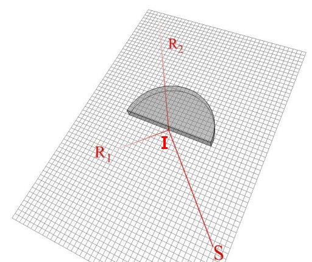

Reflexia şi refracţia luminii
Aerul, apa, sticla sunt medii prin care trece lumina.

Numim reflexie a luminii întoarcerea acesteia în mediul din care vine, la întâlnirea suprafeţei de separare dintre două medii diferite.
Numim rafracţie a luminii modificarea direcţiei acesteia la trecerea prin suprafaţa de separare dintre două medii diferite.
Reflexia şi refracţia luminii sunt fenomene care ne permit să înţelegem şi să controlăm drumul acesteia.
 Activitatea experimentală 1
Activitatea experimentală 1
Observă reflexia şi refracţia luminii pe un corp transparent. Lucrează în echipă.
Pasul 1. Aşezaţi pe masă o foaie dublă, cu pătrăţele. Fixaţi foaia pe masă, bine întinsă, folosind bandă adezivă.
Pasul 2. Aşezaţi în mijlocul foii un semicilindru din sticlă organică (din trusa de optică). Trimiteţi lumina laserului (sau a lanternei cu fantă)
spre centrul feţei plane a semicilindrului, razant la suprafaţa foii (figura 1).

Fig. 1.  Direcţia iniţială a luminii este modificată prin reflexie şi refracţie.
Direcţia iniţială a luminii este modificată prin reflexie şi refracţie.
« Simulare interactivă
Observaţi reflexia şi refracţia luminii pe semicilindrul de sticlă.
Reflexia si refracţia modifică direcţia luminii. În desenul din figura 1, drumul luminii a fost reprezentat prin simple segmente orientate,
neglijând cu totul lărgimea fasciculului.
Putoem oare obţine fascicule de lumină cu lărgimea oricât de mică?
Activitatea experimentală 2
Încearcă să micşorezi lărgimea fasciculului de lumină de la un indicator laser.
Pasul 1. Decupează din folie subţire de aluminiu (din cea folosită în bucătărie) o bucată pătrată cu latura de aproximativ 10 cm. Asigură−te
că nu are cute. Aşaz−o pe o placă de sticlă.
Pasul 2. Foloseşte cu atenţie un cutter şi trasează, dintr−o singură mişcare, o fantă lungă de câţiva centimetri, în zona centrală a
bucăţii de folie.
Pasul 3. Trimite lumina laserului prin fanta foarte îngustă, spre un perete aflat la câţiva metri. Asigură−te că nu trimiţi lumina spre
ochii cuiva!
Observă pata de lumină pe perete. Ai obţinut îngustarea aşteptata a fasciculului de lumină?
Surprinzător, pata de lumină este mai lată! Nu putem obţine fascicule de lumină oricât de înguste!
Totuşi, reprezentarea fasciculelor de lumină ca linii drepte este foarte comodă şi utilă (atâta timp cât nu intervin fante foarte înguste!). Pe acest mod
de abordare se bazează optica geometrică.
Numim rază de lumină o reprezentare simplificată a unui fascicul de lumină, a cărui lărgime este neglijabilă.
Pe desene, trasăm razele de lumină ca segmente orientate pe direcţia şi în sensul trecerii luminii.
Numim rază incidentă raza care se îndreaptă către suprafaţa de separare dintre două medii, înainte de reflexie sau refracţie
Raza SI din figura 1 este rază incidentă.
Numim punct de incidenţă punctul de intersecţie al razei incidente cu suprafaţa de separare dintre două medii.
Punctul I din figura 1 este punct de incidenţă pentru raza SI.
Numim rază reflectată raza care părăseşte suprafaţa de separare dintre două medii, după reflexie.
Raza IR1 din figura 1 este raza reflectată din punctul I.
Numim rază refractată raza care părăseşte suprafaţa de separare dintre două medii, după refracţie.
Raza IR2 din figura 1 este raza refractată din punctul I.
Există oare reguli (legi) după care au loc aceste modificări de direcţie?